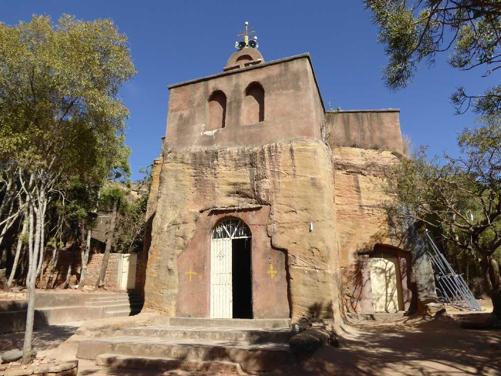
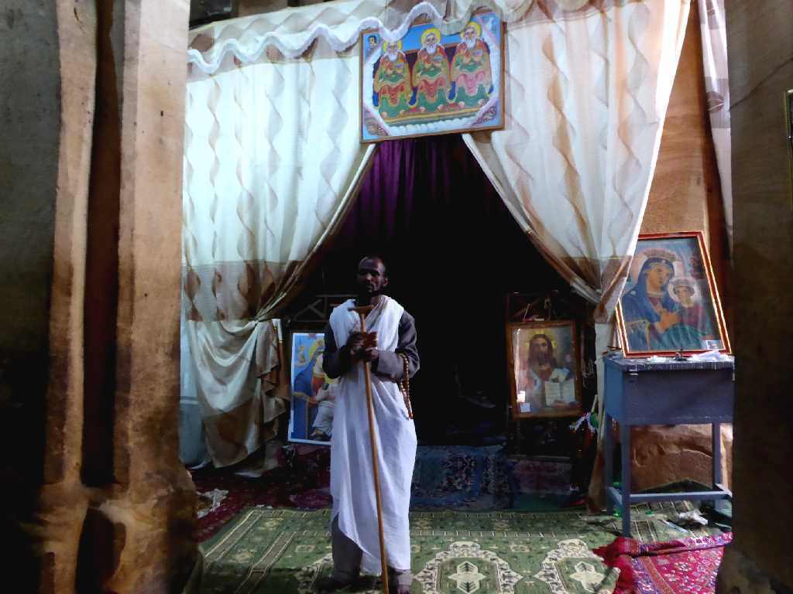
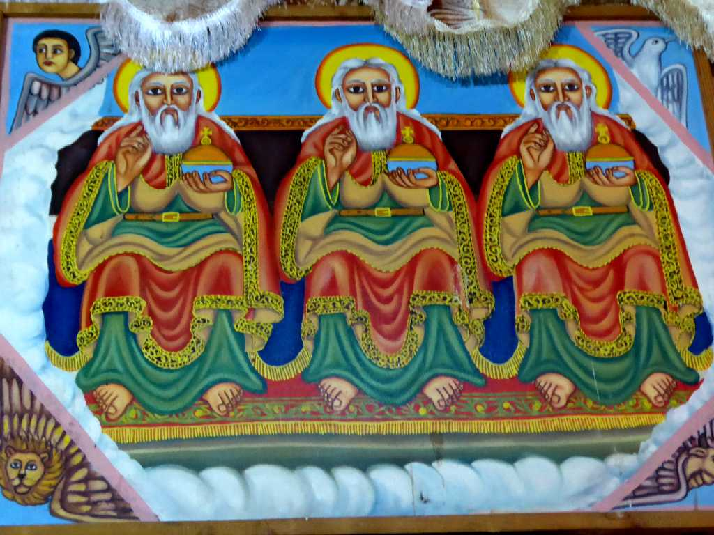
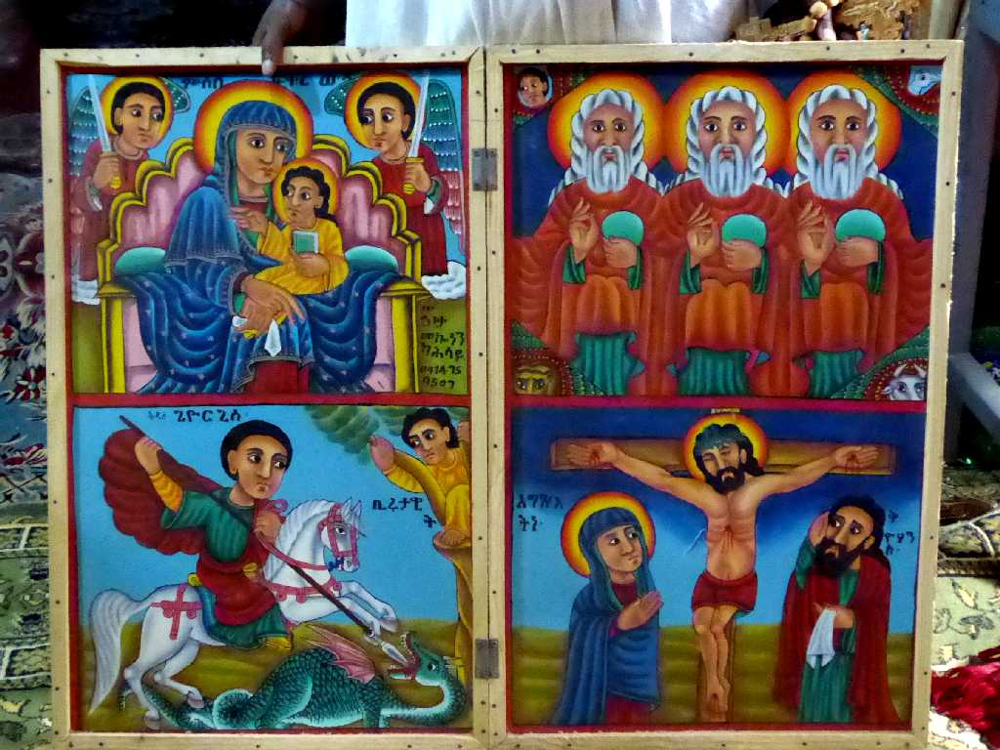
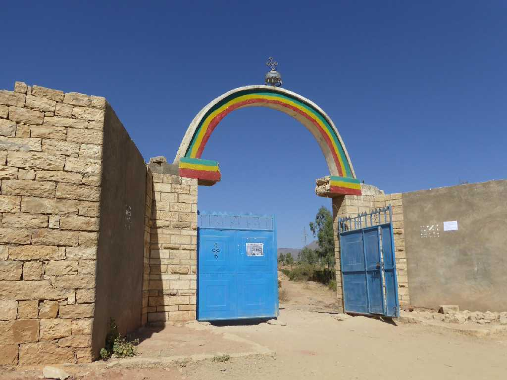
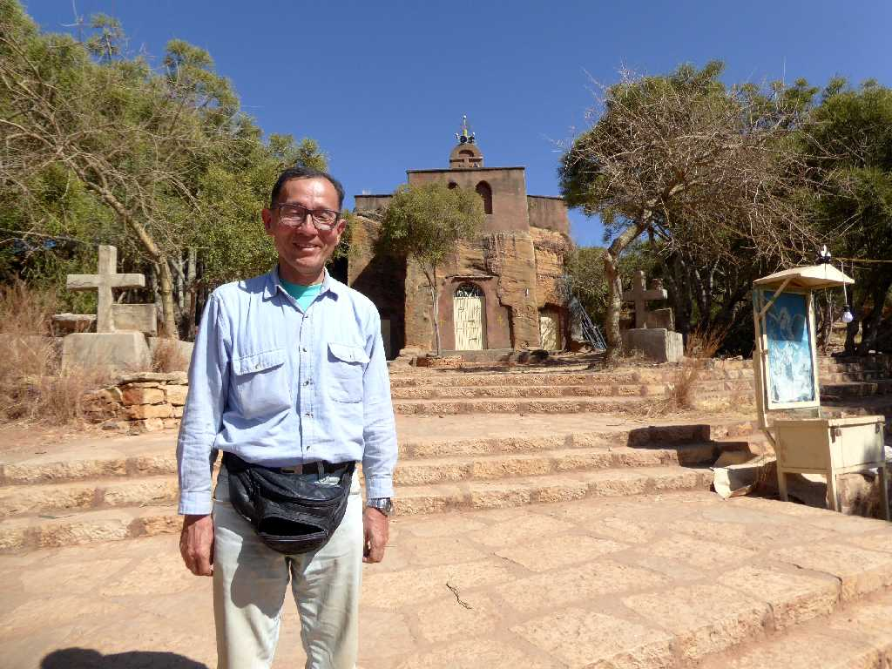

Wukro Chirkos Mekelle
アクスム王国時代の４世紀に創設されたと云われる全て岩から掘り出して創られたウクロキルコス岩窟教会

Bishop Wukro Chirkos
１０世紀頃に戦火にみまわれ壁画はほとんど消失している

Trinitarian Wukro Chirkos

Wukro Chirkos

Gate Wukro Chirkos
緑は肥沃な大地を 黄は平和と民族宗教の調和を 赤は国土の防衛のために流された血を表している

January 25 2017 Wukro Chirkos